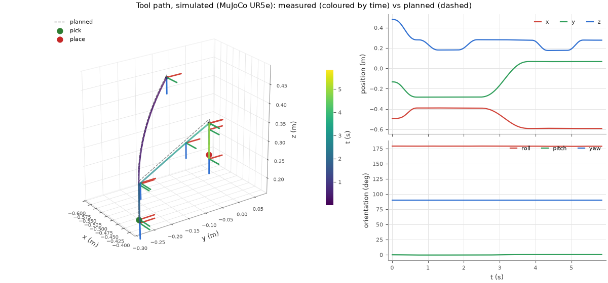
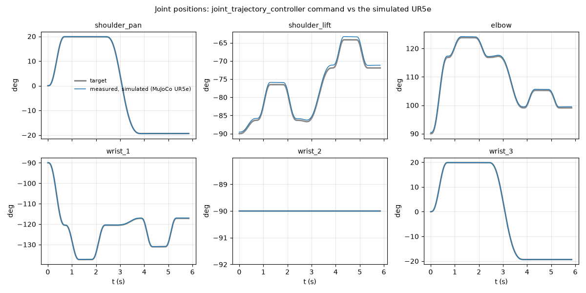
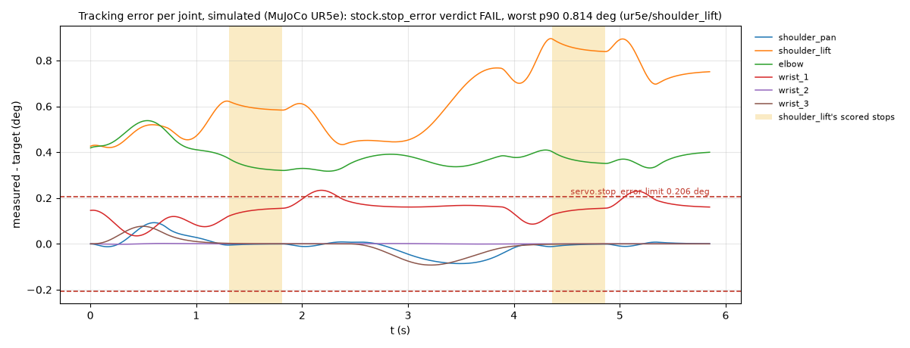

Open source · MIT · Python ≥ 3.11
robot-sdk
A generic robotics backend in plain Python. Twelve small packages that all speak one vocabulary, so a new robot task is mostly assembly: plug in the parts you already have instead of writing them again.
Each package is also its own install (pip install robot-trajectories, …); robot-sdk pins a set of versions that work together, the way a ROS release does.
Scroll the diagram sideways →
robot_msgs types in the middle. A trajectory generator hands a JointTrajectory to a controller, which turns JointState into a ServoCommand; metrics and twins read the same JointTrajectory. Hover or tap a package or a type to trace it. Every arrow is a public function signature — the list below cites each one. Dashed boxes keep their own types (no robot_msgs in their public API yet).Every arrow, with its source (19 citations)
| Package | Type | Through | Where | |
|---|---|---|---|---|
robot_activity | consumes | JointState | Observation.joints: JointState or Mapping[str, float] (duck-typed name + position) | src/robot_activity/motion.py:16 |
robot_autonomy | consumes | DiagnosticRecord | sources.diagnostics.read_diagnostics: JSONL -> DiagnosticRecord.from_dict (only module importing robot_msgs) | src/robot_autonomy/sources/diagnostics.py:35 |
robot_controllers | consumes | JointState | Controller.tick(state: JointState, dt) | src/robot_controllers/core.py:62 |
robot_controllers | consumes | JointTrajectory | LayoutController(trajectory, LayoutConfig) and JointTrajectory controllers; replace_input(message: JointTrajectory) | src/robot_controllers/controllers/layout.py:181 |
robot_controllers | produces | ServoCommand | Controller.tick -> (ServoCommand, defines mapping) | src/robot_controllers/core.py:62 |
robot_metrics | consumes | JointTrajectory | stops(target, measured, ...) -> tuple[Stop, ...] | src/robot_metrics/stops.py:154 |
robot_metrics | consumes | JointTrajectory | alignment.align(reference, measured, rule=...) | src/robot_metrics/alignment.py:94 |
robot_models | consumes | JointState | homing simulator protocol: reset() -> JointState, tick() -> JointState (returned; imported for the protocol) | src/robot_models/homing/protocols.py:31-33 |
robot_models | consumes | ServoCommand | homing simulator tick(command: ServoCommand, dt, defines) | src/robot_models/homing/protocols.py:33 |
robot_models | produces | JointCommandSequence | HomingProcedure.plan(prior, so_far) -> JointCommandSequence | None | src/robot_models/homing/protocols.py:67 |
robot_reach | produces | NamedPose | goals.to_named_pose(rec, joints) turns a solved rest-pose record into a NamedPose | src/robot_reach/goals.py:849 |
robot_trajectories | consumes | JointLimits | JointSpace.from_limits(limits, ...) | src/robot_trajectories/space.py:346 |
robot_trajectories | consumes | JointLimits | WaypointTrajectoryGenerator.__call__(points, limits, rate_hz) | src/robot_trajectories/waypoint_trajectory_generator.py:323 |
robot_trajectories | produces | JointTrajectory | every kind (burn_in_wiggle, pick_and_place, ...); README: 'Every kind returns a robot_msgs JointTrajectory' | README.md:23 |
robot_trajectories | produces | JointTrajectory | kernels.to_trajectory(...) -> JointTrajectory | src/robot_trajectories/kernels.py:377 |
robot_trajectories | produces | JointTrajectory | recipe.rebuild(...) -> JointTrajectory | src/robot_trajectories/recipe.py:47 |
sim2real | consumes | JointTrajectory | real-run ingest: every run read as a JointTrajectory at one door | src/sim2real/real.py:26 |
sim2real | consumes | NamedPose | named_poses(robot) / named_pose(name, group) return NamedPose | src/sim2real/named_poses/__init__.py:36 |
sim2real | produces | JointTrajectory | twin builds JointTrajectory(t, joint_names, positions, velocities) | src/sim2real/twin.py:699 |
A pick-and-place, assembled
One script, no new robotics code: each stage is a call into a package, and each hands the next a robot_msgs type. The arm is a simulated UR5e (MuJoCo); every number below is from a real run of the script.
Each box is one package; each arrow is the object it hands the next. The controller and the simulated arm run in a 500 Hz loop. The Arm FK / IK arrow goes through a 20-line adapter in the example: no package offers that seam yet.
Stage by stage, from the run
- 1
robot_reach.robots.ur5e()UR5e DH parameters → robot_reach.Arm6 joints, closed-form IK with 8 branches; tool at home (-0.492, -0.133, 0.488) m - 2
robot_reach.reach_map(arm, positions, orientations)Arm + 4 tool points x 1 orientation → robot_reach.ReachMapall 4 reachable tool-down; working IK branches pick 8, place 8, above pick 8, above place 8 (of 8) - 3
robot_trajectories.pick_and_place(space, pick, place, lift_m, waypoint_generator)JointSpace + 2 tool points → robot_msgs JointTrajectory5.35 s, 2675 samples at 500 Hz, 8 segments; tool path 1.077 m; peak joint speed 79.9 deg/s (minimum_jerk, 30 % of the limit) - 4
robot_controllers.controller("joint_trajectory_controller").build(trajectory).tick(state, dt)JointTrajectory, then JointState each tick → robot_msgs ServoCommand each tick2924 ticks at 500 Hz on the simulated (MuJoCo) UR5e, status 'done'; median tick 12 us; peak servo torque 39.5 N.m (shoulder_lift) - 5
robot_metrics.Collection([Alias(ErrorStat), Alias(StopStat), ...]).fold(Run)Run{target, state: JointTrajectory; tool/target, tool/state: PoseTrajectory} → dict of values with unitstool error RMS 9.15 mm, max 12.28 mm; worst joint tracking shoulder_lift max 0.90 deg; worst stop error shoulder_lift 0.839 deg - 6
robot_diagnostics.evaluate("stock.stop_error", DEFAULTS["servo.stop_error"], [Trajectory])robot_diagnostics Trajectory per joint → robot_diagnostics Result (DiagnosticStatus shape)FAIL: worst ur5e/shoulder_lift p90 0.814 deg vs limit 0.206 deg (3/6 joints pass)
Not in this run, and why
robot_thermal: its burst budget needs a per-drive rule (I_cont, I_peak, kt) from a datasheet; no package has one for the UR5e's drives, and inventing one is an artificial guardsim2real: a RobotTwin is calibrated against recorded hardware runs; there are none for a UR5e



The whole script (310 lines)
From examples/pick_and_place.py; run it with uv run python examples/pick_and_place.py in a robot_sdk checkout.
"""Pick and place on a UR5e, assembled from the robot-sdk packages: reach -> trajectory -> controller -> simulated arm ->
metrics -> diagnostics. Every stage is one call into a package; this file only passes the objects between them.
uv run --project /home/bam/robot_sdk --group examples python /home/bam/robot_sdk/examples/pick_and_place.py
Writes site/data/pick_and_place.json (each stage's call and its real result, the packages' git shas) and three plots in
site/media/. Nothing here is hardware: the arm is SIMULATED (MuJoCo Menagerie's UR5e under its own PD position servos,
the plant robot_metrics' UR5e gallery uses), and every number printed comes from running it.
"""
from __future__ import annotations
import datetime
import json
import math
import os
import subprocess
import time
from dataclasses import replace
from pathlib import Path
import matplotlib
matplotlib.use("Agg")
import matplotlib.pyplot as plt # noqa: E402
import mujoco # noqa: E402
import numpy as np # noqa: E402
from robot_controllers import controller # noqa: E402
from robot_diagnostics import evaluate, worst # noqa: E402
from robot_diagnostics.data import Trajectory # noqa: E402
from robot_diagnostics.defaults import DEFAULTS # noqa: E402
from robot_diagnostics.stock.tracking import stops # noqa: E402
from robot_metrics import DEGREES, Alias, Collection, ErrorStat, Run, StopStat # noqa: E402
from robot_msgs.sensor import JointState # noqa: E402
from robot_msgs.trajectory import JointLimits, JointTrajectory, PoseTrajectory # noqa: E402
from robot_reach import OrientationSet, reach_map # noqa: E402
from robot_reach.robots import ur5e # noqa: E402
from robot_trajectories import JointSpace, WaypointTrajectoryGenerator, pick_and_place, split # noqa: E402
SDK = Path(__file__).resolve().parents[1]
DATA_DIR, MEDIA_DIR = SDK / "site" / "data", SDK / "site" / "media"
PACKAGES = ("robot_msgs", "robot_reach", "robot_trajectories", "robot_controllers", "robot_metrics", "robot_diagnostics")
started = time.perf_counter()
stages: list[dict] = []
def record(package: str, call: str, input_type: str, output_type: str, one_line_result: str) -> None:
"""One stage for the landing page, printed as it runs."""
stages.append({"package": package, "call": call, "input_type": input_type, "output_type": output_type,
"one_line_result": one_line_result})
print(f"[{len(stages)}] {package:<19} {call}\n {input_type} -> {output_type}\n {one_line_result}")
# ---------------------------------------------------------------------------------------------- 1. robot: robot_reach
# The UR5e's closed-form kinematics from robot_reach (all eight IK branches, batched). robot_trajectories takes FK / IK
# through its Kinematics protocol (forward(q) -> 4x4, inverse(pose, seed) -> one q), so a small adapter picks the
# branch nearest the seed. WHY here and not in a package: leaves never import each other (the SDK's layer rule).
arm = ur5e()
class ReachArmKinematics:
"""robot_reach's batched Arm as robot_trajectories' Kinematics: the IK branch (and its +-2 pi twin) nearest the seed."""
def __init__(self, reach_arm):
self.arm = reach_arm
self.joint_names = tuple(reach_arm.joint_names)
self.name = f"robot_reach {reach_arm.name} (closed form)"
self.cache_key = f"robot_reach-{reach_arm.name}"
self.lower, self.upper = np.asarray(reach_arm.lower, float), np.asarray(reach_arm.upper, float)
def forward(self, joint_positions):
return self.arm.fk(np.asarray(joint_positions, float)[None])[0]
def inverse(self, target_pose, seed=None):
branches, codes = self.arm.ik(np.asarray(target_pose, float)[None])
working = branches[0][codes[0] == 0] # robot_reach Code.OK == 0
if not len(working):
return None
seed = np.zeros(len(self.joint_names)) if seed is None else np.asarray(seed, float)
nearest_twin = seed + (working - seed + math.pi) % (2 * math.pi) - math.pi
inside = np.all((nearest_twin >= self.lower) & (nearest_twin <= self.upper), axis=1)
if not inside.any():
return None
candidates = nearest_twin[inside]
return candidates[np.argmin(np.max(np.abs(candidates - seed), axis=1))]
kinematics = ReachArmKinematics(arm)
UR5E_SPEED_RAD_S = math.pi # UR5e datasheet: 180 deg/s on every joint
ASSUMED_ACCELERATION_RAD_S2 = 6.0 # a URDF has none; the value robot_trajectories' UR5e example states
limits = JointLimits(joint_names=kinematics.joint_names, min_position=kinematics.lower, max_position=kinematics.upper,
max_velocity=np.full(6, UR5E_SPEED_RAD_S))
home = np.array(arm.meta["home"], float) # robot_reach's UR5e home: tool pointing straight down
space = (JointSpace.from_limits(limits, home=home, max_acceleration=ASSUMED_ACCELERATION_RAD_S2, source="robot_reach ur5e")
.with_kinematics(kinematics))
home_tool = space.forward(home)
record("robot_reach", "robot_reach.robots.ur5e()", "UR5e DH parameters", "robot_reach.Arm",
f"6 joints, closed-form IK with 8 branches; tool at home ({', '.join(f'{v:.3f}' for v in home_tool[:3, 3])}) m")
# ---------------------------------------------------------------------------------------------- 2. reach: robot_reach
# Two tool points in front of the arm, the tool kept pointing down. Cheap: two positions x one orientation, not a map.
pick_point = home_tool[:3, 3] + np.array([0.10, -0.15, -0.30])
place_point = home_tool[:3, 3] + np.array([-0.10, 0.20, -0.30])
LIFT_M = 0.10
targets = np.array([pick_point, place_point, pick_point + (0, 0, LIFT_M), place_point + (0, 0, LIFT_M)])
tool_down = OrientationSet(R=home_tool[:3, :3][None], tilt=np.zeros(1), roll=np.zeros(1), approach=np.array([0.0, 0.0, -1.0]))
reach = reach_map(arm, targets, tool_down)
branches = reach.n_solutions[:, 0]
if not reach.valid_mask.all():
raise SystemExit(f"a target is out of reach: IK branches per target {branches.tolist()}")
record("robot_reach", "robot_reach.reach_map(arm, positions, orientations)", "Arm + 4 tool points x 1 orientation",
"robot_reach.ReachMap", f"all 4 reachable tool-down; working IK branches pick {branches[0]}, place {branches[1]}, "
f"above pick {branches[2]}, above place {branches[3]} (of 8)")
# ---------------------------------------------------------------------------------------------- 3. trajectory: robot_trajectories
# The U: approach, straight down, dwell, up, over, down, dwell, up. Legs timed by the built-in minimum-jerk
# WaypointTrajectoryGenerator (Ruckig is a plugin: not installed in this environment).
leg_timing = WaypointTrajectoryGenerator.minimum_jerk(peak_speed_fraction=0.3)
cycle = pick_and_place(space, pick=pick_point, place=place_point, lift_m=LIFT_M, waypoint_generator=leg_timing)
planned_tool = space.tool_points(cycle)
segments = split(cycle)
record("robot_trajectories", "robot_trajectories.pick_and_place(space, pick, place, lift_m, waypoint_generator)",
"JointSpace + 2 tool points", "robot_msgs JointTrajectory",
f"{cycle.duration:.2f} s, {len(cycle)} samples at {space.rate_hz:g} Hz, {len(segments)} segments; "
f"tool path {np.sum(np.linalg.norm(np.diff(planned_tool, axis=0), axis=1)):.3f} m; "
f"peak joint speed {np.max(np.abs(cycle.velocities)) * DEGREES:.1f} deg/s (minimum_jerk, 30 % of the limit)")
# ---------------------------------------------------------------------------------------------- 4. control: robot_controllers
# The joint trajectory controller ticks against a SIMULATED UR5e: MuJoCo Menagerie's ur5e.xml, each joint its own PD
# position servo (kp 2000 / kd 400 N.m on the big joints, 500 / 100 on the wrist), no gravity compensation. A command's
# position and velocity drive it as kp (p - q) + kd (v - qd), i.e. ctrl = p + (kd / kp) v (the mapping robot_metrics'
# ur5e_sim uses). The controller ticks once per physics step, 2 ms.
menagerie = Path(os.environ.get("MENAGERIE", Path.home() / ".cache" / "mujoco_menagerie"))
model = mujoco.MjModel.from_xml_path(str(menagerie / "universal_robots_ur5e" / "ur5e.xml"))
data = mujoco.MjData(model)
step_s = float(model.opt.timestep)
servo_kp = model.actuator_gainprm[:, 0].copy()
servo_kd = -model.actuator_biasprm[:, 2].copy()
PRE_ROLL_S, SETTLE_S = 0.5, 0.5 # hold the start before t = 0 (the servos sag under gravity), then hold the end
jtc = controller("joint_trajectory_controller").build(cycle)
data.qpos[:] = cycle.positions[0]
data.ctrl[:] = cycle.positions[0]
for _ in range(round(PRE_ROLL_S / step_s)):
mujoco.mj_step(model, data)
tick_times, commanded_q, commanded_qd, measured_q, measured_qd, measured_effort = [], [], [], [], [], []
compute_s = []
for tick in range(round((cycle.duration + SETTLE_S) / step_s)):
state = JointState(name=kinematics.joint_names, position=data.qpos.copy(), velocity=data.qvel.copy())
tick_start = time.perf_counter()
command, _defines = jtc.tick(state, step_s)
compute_s.append(time.perf_counter() - tick_start)
data.ctrl[:] = command.position + (servo_kd / servo_kp) * command.velocity
mujoco.mj_step(model, data)
tick_times.append((tick + 1) * step_s)
commanded_q.append(command.position)
commanded_qd.append(command.velocity)
measured_q.append(data.qpos.copy())
measured_qd.append(data.qvel.copy())
measured_effort.append(data.actuator_force.copy())
tick_times = np.array(tick_times)
target = JointTrajectory(t=tick_times, joint_names=kinematics.joint_names, positions=np.array(commanded_q),
velocities=np.array(commanded_qd))
measured = JointTrajectory(t=tick_times, joint_names=kinematics.joint_names, positions=np.array(measured_q),
velocities=np.array(measured_qd), effort=np.array(measured_effort))
peak_effort = np.max(np.abs(measured.effort), axis=0)
record("robot_controllers", 'robot_controllers.controller("joint_trajectory_controller").build(trajectory).tick(state, dt)',
"JointTrajectory, then JointState each tick", "robot_msgs ServoCommand each tick",
f"{len(tick_times)} ticks at {1 / step_s:g} Hz on the simulated (MuJoCo) UR5e, status {jtc.status!r}; "
f"median tick {np.median(compute_s) * 1e6:.0f} us; peak servo torque {peak_effort.max():.1f} N.m "
f"({kinematics.joint_names[int(np.argmax(peak_effort))]})")
# ---------------------------------------------------------------------------------------------- 5. metrics: robot_metrics
# Tracking error (RMS and max) and stop error per joint, plus the tool's position error, all from one Run.
tool_target = PoseTrajectory.from_matrices(tick_times, kinematics.arm.fk(target.positions), child_frame_id="flange")
tool_measured = PoseTrajectory.from_matrices(tick_times, kinematics.arm.fk(measured.positions), child_frame_id="flange")
run = Run("ur5e-pick-and-place-sim", streams={"target": target, "state": measured, "tool/target": tool_target,
"tool/state": tool_measured}, provenance="sim",
labels={"deployment": "ur5e (simulated, MuJoCo)", "controller": "joint_trajectory_controller"})
# WHY degrees: angles shown to a person are in degrees (Zach's rule); the maths and the data stay SI (rad)
DEG = 180.0 / np.pi
aliases = [Alias("tool error RMS", ErrorStat(statistic="rms"), signal=("tool/target", "tool/state"), unit="mm", scale=1e3),
Alias("tool error max", ErrorStat(statistic="max_abs"), signal=("tool/target", "tool/state"), unit="mm", scale=1e3)]
for index, joint in enumerate(kinematics.joint_names):
aliases += [Alias(f"{joint} tracking RMS", ErrorStat(statistic="rms", joint=index), unit="deg", scale=DEG),
Alias(f"{joint} tracking max", ErrorStat(statistic="max_abs", joint=index), unit="deg", scale=DEG),
Alias(f"{joint} stop error max", StopStat(of="error", statistic="max", joint=index), unit="deg", scale=DEG)]
metrics = Collection(aliases)
values = metrics.values(metrics.fold(run))
worst_tracking = max(kinematics.joint_names, key=lambda joint: values[f"{joint} tracking max"])
worst_stop = max(kinematics.joint_names, key=lambda joint: values[f"{joint} stop error max"] or 0.0)
record("robot_metrics", "robot_metrics.Collection([Alias(ErrorStat), Alias(StopStat), ...]).fold(Run)",
"Run{target, state: JointTrajectory; tool/target, tool/state: PoseTrajectory}", "dict of values with units",
f"tool error RMS {values['tool error RMS']:.2f} mm, max {values['tool error max']:.2f} mm; worst joint tracking "
f"{worst_tracking} max {values[f'{worst_tracking} tracking max']:.2f} deg; worst stop error {worst_stop} "
f"{values[f'{worst_stop} stop error max']:.3f} deg")
# ---------------------------------------------------------------------------------------------- 6. diagnostics: robot_diagnostics
# The stock stop-error check at its catalog default (servo.stop_error: p90 of |stop error| <= 3.6 mrad, the strictest
# joint's share of the 5 mm tool gate), one per joint, rolled up. side="output": the simulated joint angle is the output.
stop_check = replace(DEFAULTS["servo.stop_error"].config, side="output")
per_joint = []
for index, joint in enumerate(kinematics.joint_names):
joint_run = Trajectory(t=tick_times, q_rad=measured.positions[:, index], q_target_rad=target.positions[:, index],
qd_target_rad_s=target.velocities[:, index], run=f"sim/{joint}", device=joint, source="sim")
per_joint.append(evaluate("stock.stop_error", stop_check, [joint_run], subject=f"ur5e/{joint}"))
verdict = worst(result.verdict for result in per_joint)
worst_result = max(per_joint, key=lambda result: result.value or 0.0)
limit_mrad = stop_check.limits.error_high # the catalog states it in mrad
limit_deg = limit_mrad / 1e3 * DEG
record("robot_diagnostics", 'robot_diagnostics.evaluate("stock.stop_error", DEFAULTS["servo.stop_error"], [Trajectory])',
"robot_diagnostics Trajectory per joint", "robot_diagnostics Result (DiagnosticStatus shape)",
f"{verdict.upper()}: worst {worst_result.subject} p90 {worst_result.value / 1e3 * DEG:.3f} deg vs limit {limit_deg:.3f} deg "
f"({sum(r.verdict == 'pass' for r in per_joint)}/6 joints pass)")
# ---------------------------------------------------------------------------------------------- plots (site/media)
MEDIA_DIR.mkdir(parents=True, exist_ok=True)
DATA_DIR.mkdir(parents=True, exist_ok=True)
SIM_LABEL = "simulated (MuJoCo UR5e)"
# (a) the tool path: robot_msgs' stock PoseTrajectory.plot(), with the plan and the pick / place points drawn on its 3-D axes
figure = tool_measured.plot()
path_axes = figure.axes[0]
for axis in figure.axes: # the stock plot's orientation panel is in rad; show degrees (data stays SI)
if axis.get_ylabel() == "orientation (rad)":
for line in axis.get_lines():
line.set_ydata(np.asarray(line.get_ydata()) * DEG)
axis.relim(); axis.autoscale_view(); axis.set_ylabel("orientation (deg)")
path_axes.plot(*tool_target.positions.T, color="#888888", lw=1.0, ls="--", label="planned")
for point, name, colour in ((pick_point, "pick", "#2e7d32"), (place_point, "place", "#c62828")):
path_axes.scatter(*point, s=60, color=colour, depthshade=False, label=name)
path_axes.legend(loc="upper left", fontsize=8, frameon=False)
figure.suptitle(f"Tool path, {SIM_LABEL}: measured (coloured by time) vs planned (dashed)", fontsize=11)
figure.set_size_inches(12, 5.6)
figure.savefig(MEDIA_DIR / "pick_and_place_tool_path.png", dpi=100)
plt.close(figure)
# (b) joint positions: target vs measured
figure, axes = plt.subplots(2, 3, figsize=(12, 6), dpi=100, sharex=True)
for index, (joint, axis) in enumerate(zip(kinematics.joint_names, axes.ravel(), strict=True)):
axis.plot(tick_times, target.positions[:, index] * DEGREES, color="#888888", lw=2.2, label="target")
axis.plot(tick_times, measured.positions[:, index] * DEGREES, color="#1f77b4", lw=1.1, label="measured, " + SIM_LABEL)
axis.set_title(joint, fontsize=10)
axis.ticklabel_format(axis="y", useOffset=False)
middle = 0.5 * sum(axis.get_ylim())
if np.ptp(axis.get_ylim()) < 4.0: # a joint that barely moves: show it at a readable scale
axis.set_ylim(middle - 2.0, middle + 2.0)
axis.grid(alpha=0.3)
axis.set_ylabel("deg")
for axis in axes[1]:
axis.set_xlabel("t (s)")
axes[0, 0].legend(fontsize=8, frameon=False)
figure.suptitle("Joint positions: joint_trajectory_controller command vs the simulated UR5e", fontsize=11)
figure.tight_layout()
figure.savefig(MEDIA_DIR / "pick_and_place_joints.png")
plt.close(figure)
# (c) tracking error over time, the stop windows the diagnostic scored, and its limit
figure, axis = plt.subplots(figsize=(12, 4.6), dpi=100)
error_deg = (measured.positions - target.positions) * DEG
for index, joint in enumerate(kinematics.joint_names):
axis.plot(tick_times, error_deg[:, index], lw=1.1, label=joint)
worst_index = kinematics.joint_names.index(worst_result.subject.split("/")[-1])
for stop_number, (_error, dwell_start, dwell_end) in enumerate(stops(
Trajectory(t=tick_times, q_rad=measured.positions[:, worst_index], q_target_rad=target.positions[:, worst_index],
qd_target_rad_s=target.velocities[:, worst_index]), stop_check)):
axis.axvspan(dwell_start, dwell_end, color="#f0c040", alpha=0.3, lw=0,
label=f"{kinematics.joint_names[worst_index]}'s scored stops" if stop_number == 0 else None)
for bound in (limit_deg, -limit_deg):
axis.axhline(bound, color="#c0392b", ls="--", lw=1.2)
axis.text(tick_times[-1], limit_deg, f" servo.stop_error limit {limit_deg:.3f} deg", color="#c0392b", va="bottom",
ha="right", fontsize=8)
axis.set_xlabel("t (s)")
axis.set_ylabel("measured - target (deg)")
axis.set_title(f"Tracking error per joint, {SIM_LABEL}: stock.stop_error verdict {verdict.upper()}, "
f"worst p90 {worst_result.value / 1e3 * DEG:.3f} deg ({worst_result.subject})", fontsize=10)
axis.grid(alpha=0.3)
axis.legend(fontsize=8, loc="upper left", bbox_to_anchor=(1.01, 1.0), frameon=False)
figure.tight_layout()
figure.savefig(MEDIA_DIR / "pick_and_place_tracking_error.png")
plt.close(figure)
# ---------------------------------------------------------------------------------------------- site/data/pick_and_place.json
def git_sha(repo: str) -> str:
folder = SDK.parent / repo
sha = subprocess.run(["git", "-C", str(folder), "rev-parse", "--short", "HEAD"], capture_output=True, text=True).stdout.strip()
dirty = subprocess.run(["git", "-C", str(folder), "status", "--porcelain", "--untracked-files=no"], capture_output=True,
text=True).stdout.strip()
return f"{sha}{'-dirty' if dirty else ''}"
runtime_s = time.perf_counter() - started
summary = {
"title": "Pick and place on a UR5e, assembled from robot-sdk",
"plant": SIM_LABEL + ": MuJoCo Menagerie universal_robots_ur5e/ur5e.xml, its own PD position servos",
"stages": stages,
"skipped": [
{"package": "robot_thermal", "why": "its burst budget needs a per-drive rule (I_cont, I_peak, kt) from a datasheet; "
"no package has one for the UR5e's drives, and inventing one is an artificial guard"},
{"package": "sim2real", "why": "a RobotTwin is calibrated against recorded hardware runs; there are none for a UR5e"},
],
"media": ["media/pick_and_place_tool_path.png", "media/pick_and_place_joints.png", "media/pick_and_place_tracking_error.png"],
"run": {"date": datetime.datetime.now().astimezone().isoformat(timespec="seconds"), "runtime_s": round(runtime_s, 2),
"mujoco": mujoco.__version__, "git": {repo: git_sha(repo) for repo in ("robot_sdk", *PACKAGES)}},
}
(DATA_DIR / "pick_and_place.json").write_text(json.dumps(summary, indent=2) + "\n")
print(f"\nwrote {DATA_DIR / 'pick_and_place.json'} and 3 plots in {MEDIA_DIR} ({runtime_s:.1f} s)")
The packages
Bottom to top: vocabulary → models → leaves (each one job, never importing a sibling) → outer API and checks. A package imports only from layers below it; a check in robot_sdk enforces it.
robot_msgs
Frozen numpy-backed message dataclasses every package joins on
robot_models
Generic models by type: actuators, arms, sensors, homing procedures
robot_controllers
Feed-forward/feedback controllers as black boxes plus a Layout
robot_reach
Workspace and IK-branch reach of any arm, FK/IK passed in
robot_thermal
Motor and board heat tracking with burst-limit decisions
robot_trajectories
Trajectory kinds from limits and tasks, one JointTrajectory out
robot_autonomy
Counts human interventions per working hour; ranks causes
robot_metrics
Tracking, stop, lag, repeatability metrics over message streams
robot_activity
Per-robot and fleet activity, work queue, stalemate flags
like_keras
Components, ports and systems over dora; robot_msgs on the wire
traj_compare
A/B trajectory comparison and coverage viewers, one static report.html
sim2real
RobotTwin, calibrate() and fit/replay over real or simulated runs
robot_diagnostics
Diagnostics as pure functions: diagnose(config, data) -> Result
Built for coding agents too
The repo ships an agent skill, skill/SKILL.md: one row per package saying what it is for, so an agent asked for "UR5e test trajectories, scored for tracking" reaches for JointSpace.from_description, a WaypointTrajectoryGenerator, the trajectory controller and robot_metrics — instead of writing them again. Link the folder into your agent's skills directory as robot-sdk.